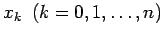

Inhalt Index DeskTop Bronstein

 Numerische Mathematik Numerische Lösung nichtlinearer Gleichungen
Numerische Mathematik Numerische Lösung nichtlinearer Gleichungen


Das allgemeine Prinzip der iterativen Methoden zur genäherten Lösung von Gleichungen besteht darin, ausgehend von bekannten Näherungswerten  für eine Lösung, schrittweise, also durch Iteration, eine Folge von weiteren Näherungswerten zu erzeugen, die möglichst schnell gegen die betreffende Lösung der gegebenen Gleichung konvergiert.